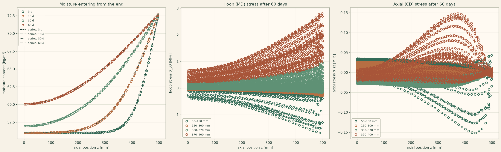
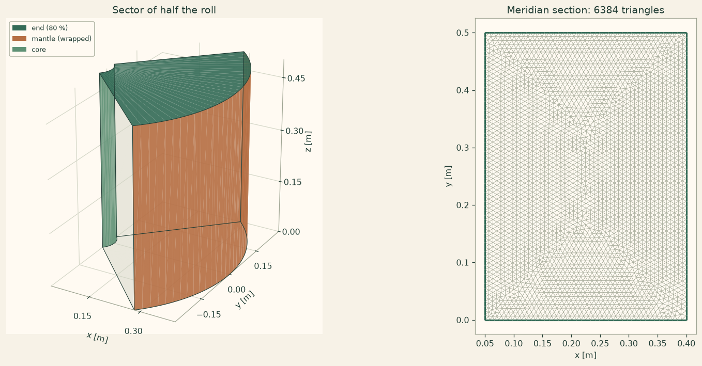

Docs › Examples › Moisture uptake and swelling stresses in a paperboard roll
Hygroscopic swelling · 2D-axisymmetric
Moisture uptake and swelling stresses in a paperboard roll
A wrapped paperboard roll stored at 50 % humidity takes up moisture from its ends at 80 %, and the board swells strongly through its thickness and little along the sheets.
Run locally with OneSimulation. The example downloads are free. Running them requires an activated runtime. Runtime Alpha 0.2.1a8 · CPython 3.13 on macOS (Apple Silicon), Ubuntu 22.04 (x86-64), and Windows x64. Installation and activation · View pilot plans. Scope of the reference checks.


What it computes
OneSimulation reads a sector of the roll from a STEP file, cuts its meridian section, solves the moisture transport on finite volumes of the revolved section, and hands the moisture history as a function of position and time to an axisymmetric small-strain solid with cylindrically orthotropic stiffness and orthotropic hygroscopic expansion as an eigenstrain. The script that builds the STEP file comes with the notebook.
What it checks
The refined meridian has 6,384 moisture cells and 12,983 quadratic displacement nodes. Moisture differs from the slab series by at most 0.074 kg/m³ after three days. At sixty days the peak hoop stress is 2.853 MPa, compared with 2.800 MPa on the 2,616-cell mesh.
Geometry
Save the STEP file paperboard_roll_moisture_swelling.step next to the notebook before running it.


The geometry script
The script paperboard_roll_moisture_swelling_geometry.py builds the geometry with the CAD objects of OneSimulation and writes the file. Change a dimension there, run it, and run the notebook again.
"""Geometry of the OneSimulation example "Moisture uptake and swelling stresses in a paperboard roll".
Builds a 90-degree sector of one half of a paperboard roll (core radius 50 mm, outer radius 400 mm,
half width 500 mm, axis along z, mid-plane at z = 0) with the CAD objects of OneSimulation and writes
paperboard_roll_moisture_swelling.step. The example computes on its meridian section y = 0. The
faces are named core, mantle, end (z = 500 mm) and middle (z = 0).
"""
import numpy as np
from onesim.cad.d3 import AnnularCylinder
roll = AnnularCylinder(inner_radius=0.05, outer_radius=0.40, length=0.50)
sector = roll.sector(np.pi / 2, axis=(0.0, 0.0, 1.0), start=(np.cos(-np.pi / 4), np.sin(-np.pi / 4), 0.0))
sector = sector.grouped(core=sector.select(faces=lambda face: face.kind == "cylinder" and face.radius < 0.2),
mantle=sector.select(faces=lambda face: face.kind == "cylinder" and face.radius > 0.2),
middle=sector.select(faces=lambda face: abs(face.center[2]) < 1e-9),
end=sector.select(faces=lambda face: abs(face.center[2] - 0.50) < 1e-9))
sector.save("paperboard_roll_moisture_swelling.step")The notebook
The complete notebook, cell by cell. Run it to produce the figures and the comparison printout.
Paper and board take up and give off moisture with the humidity of the surrounding air, and they swell and shrink with it: little in the machine direction (MD, wound along the circumference of a roll), more in the cross direction (CD, along its axis) and some ten times more through the thickness (ZD, the radius of the roll). In a roll the moisture moves through the layers only slowly but quickly along them, between the sheets; a roll wrapped around its mantle takes up moisture from its ends. The swelling of the moist end zones against the dry middle of the roll causes stresses that can crush the core, wave the edges or crack the end faces.
This wrapped-roll case isolates ingress through the cut ends at a fixed humidity. The assumed material constants and fixed core describe the example specimen.
Setup. Core radius \(a=50\) mm (rigid core), outer radius \(b=400\) mm, width 1 m (half computed, symmetry at the mid-plane). Moisture content \(w\) (kg/m³) of the board in equilibrium with the air through the sorption isotherm \(w=28+56\,\varphi\); diffusivity along the sheets \(10^{-8}\) m²/s. The roll starts in equilibrium with 50 % and its ends are exposed to 80 % from \(t=0\); the wrapping of the mantle and the core are impermeable. Board: \(E_r=30\) MPa (ZD), \(E_z=2.5\) GPa (CD), \(E_\theta=6\) GPa (MD), \(G_{rz}=G_{r\theta}=80\) MPa, \(G_{z\theta}=2\) GPa, \(\nu_{rz}=\nu_{r\theta}=0.01\), \(\nu_{z\theta}=0.18\); hygroscopic expansion \(4.3\cdot10^{-4}\) (ZD), \(4.3\cdot10^{-5}\) (CD) and \(1.4\cdot10^{-5}\) (MD) per kg/m³. The roll comes from the CAD file paperboard_roll_moisture_swelling.step, written by paperboard_roll_moisture_swelling_geometry.py with the CAD objects of OneSimulation; both problems use its meridian section.
| edge of the section | moisture | mechanics |
|---|---|---|
end | relative humidity 80 % | free |
mantle | impermeable (wrapped) | free |
core | impermeable | radial displacement 0 |
middle | symmetry | axial displacement 0 |
Checks. (1) For a constant diffusivity the moisture content obeys the linear diffusion equation; with sealed mantle and core it depends on \(z\) only, and the relative unbalance \(\theta=(w-w_\infty)/(w_0-w_\infty)\) is the series of the slab open at \(z=\pm W/2\): \(\theta=\sum_n\frac{4(-1)^n}{(2n+1)\pi}\cos\frac{(2n+1)\pi z}{W}\,e^{-D(2n+1)^2\pi^2t/W^2}\). (2) With the test displacements \(z\,\mathbf e_z\) and \(r\,\mathbf e_r\) the weak form gives two exact identities: \(\int\sigma_{zz}\,dV=0\) (no axial force on the half roll) and \(\int(\sigma_{rr}+\sigma_{\theta\theta})\,dV=a\,R_r\) with the radial reaction \(R_r\) of the core.
import numpy as np
from onesim.cad.exchange import load
from onesim.meshing import TriangularMesher
from onesim.numerics import Numerics
from onesim.numerics.fvm import (
CentralDifference,
FiniteVolume,
LeastSquaresGradient,
RevolvedCellMeshView,
)
from onesim.numerics.linear import SparseDirect
from onesim.numerics.nonlinear import Newton
from onesim.numerics.time import BDF
from onesim.physics.hydrodynamics import (
FixedRelativeHumidity,
MoistureTransport,
SorptionIsotherm,
)
from onesim.physics.solid_mechanics import SmallStrainSolid
from onesim.simulation import Problem, Simulation
from onesim.simulation.initial_conditions import InitialValue
from onesim.visualization import plots, theme
theme.set()Geometry and mesh
The meridian section uses an 8 mm triangular mesh for the coupled calculation. Compare its cell count with the original 12.5 mm mesh. Each triangle carries one moisture unknown, with quadratic elements for the mechanics.
roll = load("paperboard_roll_moisture_swelling.step")
faces = roll.boundaries
meridian = roll.section((0, 1, 0), origin=(0, 0, 0))
edges = meridian.boundaries
coarse = TriangularMesher(target_size=0.0125).generate(meridian)
mesh = TriangularMesher(target_size=0.008).generate(meridian)
print(f"Meridian mesh: {coarse.cell_count} triangles at 12.5 mm, {mesh.cell_count} at 8 mm")
fig = plots.figure(1, 2, size=(14, 6))
plots.geometry(
roll,
selection={"end (80 %)": faces.end, "mantle (wrapped)": faces.mantle, "core": faces.core},
labels=False,
camera=plots.Camera(elevation=25, azimuth=-60),
title="Sector of half the roll",
ax=fig[0],
)
plots.mesh(
mesh,
groups=("all",),
legend=False,
title=f"Meridian section: {mesh.cell_count} triangles",
ax=fig[1],
)
plots.show()Moisture transport
MoistureTransport on finite volumes of the revolved section; second-order BDF steps of 12 hours for 60 days.
day = 86400.0
inner, outer, half_width = 0.05, 0.40, 0.50
diffusivity = 1e-8
isotherm = SorptionIsotherm(
function=lambda phi: 28.0 + 56.0 * phi,
derivative=lambda phi: 56.0 + 0 * phi,
inverse=lambda w: (w - 28.0) / 56.0,
)
board = MoistureTransport(
domain=meridian.domain(), sorption_isotherm=isotherm, moisture_diffusivity=diffusivity
)
initial, ambient = float(isotherm.moisture_content(0.5)), float(isotherm.moisture_content(0.8))
moisture = Simulation(
problem=Problem(
name="Roll in humid air",
geometry=meridian,
physics=(board,),
initial_conditions=(InitialValue(board.moisture_content, initial),),
boundary_conditions=(FixedRelativeHumidity(physics=board, boundary=edges.end, value=0.8),),
),
mesh=mesh,
numerics=Numerics(
spatial=FiniteVolume(
gradient=LeastSquaresGradient(),
diffusion=CentralDifference(),
volume_mesh_view_factory=RevolvedCellMeshView,
),
time_integrator=BDF(order=2),
nonlinear_solver=Newton(linear_solver=SparseDirect(), absolute_tolerance=1e-9),
),
).run(start_time=0.0, end_time=60 * day, time_step=0.5 * day)
content = moisture.field(board.moisture_content)Moisture against the series solution
400 terms of the slab series, compared at the cell centres.
odd = 2 * np.arange(400) + 1
slab = lambda z, t: np.cos(np.outer(z, odd * np.pi / (2 * half_width))) @ (
4
* (-1.0) ** np.arange(400)
/ (odd * np.pi)
* np.exp(-diffusivity * (odd * np.pi / (2 * half_width)) ** 2 * t)
)
centres = np.asarray(content.space.dof_coordinates)
for days in (3, 10, 30, 60):
computed = np.asarray(content.at(days * day).values)
deviation = np.abs(computed - (ambient + (initial - ambient) * slab(centres[:, 1], days * day)))
print(
f"t = {days:2d} d: moisture content within {deviation.max():.3f} kg/m³ of the series solution "
f"(rms {np.sqrt(np.mean(deviation**2)):.4f}; change at the end {ambient - initial:.1f} kg/m³)"
)Swelling stresses
Orthotropic stiffness in the order \((r, z, \theta, rz, z\theta, r\theta)\) from the compliance, and the eigenstrain \(\beta\,(w-w_0)\) from the moisture history through time_interpolant().
Er, Ez, Et = 0.03e9, 2.5e9, 6e9
compliance = np.diag([1 / Er, 1 / Ez, 1 / Et, 1 / 0.08e9, 1 / 2e9, 1 / 0.08e9])
compliance[0, 1] = compliance[1, 0] = -0.01 / Er
compliance[0, 2] = compliance[2, 0] = -0.01 / Er
compliance[1, 2] = compliance[2, 1] = -0.18 / Ez
stiffness = np.linalg.inv(compliance)
expansion = np.array([4.3e-4, 4.3e-5, 1.4e-5, 0.0, 0.0, 0.0])
history = content.time_interpolant()
times = np.array([1, 3, 10, 30, 60]) * day
result = SmallStrainSolid(youngs_modulus=Ez, poisson_ratio=0.2, kinematics="axisymmetric").solve(
mesh=mesh,
times=times,
order=2,
elastic_stiffness=stiffness,
displacements=((edges.core, "r", 0.0), (edges.middle, "z", 0.0)),
eigenstrain=lambda points, time: np.outer(history(points, time) - initial, expansion),
)
weights = result.quadrature_weights
nodes = result.coordinates
print(f"Coupled calculation: {len(centres)} moisture cells, {len(nodes)} quadratic displacement nodes")
core = np.abs(nodes[:, 0] - inner) < 1e-9
for k, days in enumerate(times / day):
stress = result.stress[k]
axial_force = np.sum(weights * stress[:, 1, 1])
radial_hoop = np.sum(weights * (stress[:, 0, 0] + stress[:, 2, 2]))
scale = np.sum(weights * np.abs(stress[:, 1, 1]))
print(
f"t = {days:2.0f} d: ∫σ_zz dV = {axial_force:9.3e} N m (∫|σ_zz| dV = {scale:8.3e}); ∫(σ_rr+σ_θθ) dV = {radial_hoop:10.4e} N m, "
f"a R_r = {inner * result.reactions[k][core, 0].sum():10.4e}; largest hoop stress {stress[:, 2, 2].max() / 1e6:6.3f} MPa, "
f"radial reaction of the core {result.reactions[k][core, 0].sum() / 1e3:7.3f} kN"
)Figures
Left the moisture content along the axis at several times, computed (cells near mid-radius) and from the series; middle the hoop stress, right the axial stress at the quadrature points after 60 days against the axial position, coloured by radius band.
z_line = np.linspace(0.0, half_width, 200)
band = np.abs(centres[:, 0] - 0.225) < 0.01
points = result.quadrature_coordinates
bands = {
f"{1e3 * low:.0f}–{1e3 * high:.0f} mm": (points[:, 0] >= low) & (points[:, 0] < high)
for low, high in ((0.05, 0.15), (0.15, 0.30), (0.30, 0.37), (0.37, 0.40))
}
fig = plots.figure(1, 3, size=(20, 6))
plots.line(
points={
f"{d} d": (1e3 * centres[band, 1], np.asarray(content.at(d * day).values)[band])
for d in (3, 10, 30, 60)
},
reference={
f"series, {d} d": (1e3 * z_line, ambient + (initial - ambient) * slab(z_line, d * day))
for d in (3, 10, 30, 60)
},
xlabel="axial position z [mm]",
ylabel="moisture content [kg/m³]",
title="Moisture entering from the end",
legend="upper left",
ax=fig[0],
)
plots.line(
points={
name: (1e3 * points[mask, 1], result.stress[-1][mask, 2, 2] / 1e6)
for name, mask in bands.items()
},
xlabel="axial position z [mm]",
ylabel="hoop stress σ_θθ [MPa]",
title="Hoop (MD) stress after 60 days",
legend="lower left",
ax=fig[1],
)
plots.line(
points={
name: (1e3 * points[mask, 1], result.stress[-1][mask, 1, 1] / 1e6)
for name, mask in bands.items()
},
xlabel="axial position z [mm]",
ylabel="axial stress σ_zz [MPa]",
title="Axial (CD) stress after 60 days",
legend="lower left",
ax=fig[2],
)
plots.show()Going further
Let the humidity cycle between day and night with value=lambda x, y, t: ...; unwrap the mantle so that moisture also enters through the layers, much more slowly (direction_factors of MoistureTransport on cells whose faces follow the layers); or let the core give way with a spring support instead of a rigid one.